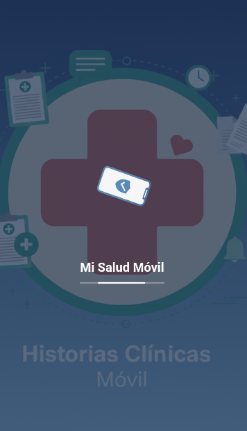
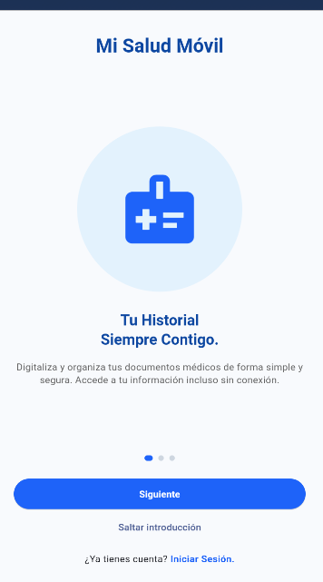
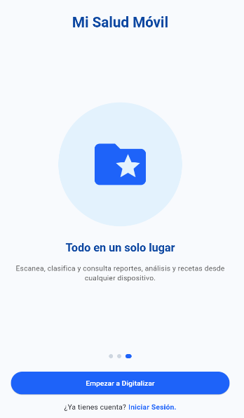

Mi Salud Móvil es la aplicación esencial diseñada para devolverte el control total de tu historial médico y el de tu familia. Olvídate de la frustración de buscar papeles, de la información fragmentada o de no tener tus datos vitales cuando más los necesitas.
Transformamos tus exámenes, recetas y diagnósticos en papel en un historial digital portable y accesible, incluso sin conexión a internet. Es la solución perfecta para pacientes, tutores y profesionales de la salud.
Funcionalidades Clave
💾 Digitalización y Organización Inteligente
Escaneo Inteligente (OCR): Usa la cámara de tu teléfono para escanear y digitalizar al instante cualquier documento médico físico.
Organización Automática: Clasificamos y agrupamos tus documentos por fecha, tipo (Laboratorio, Receta, etc.) y centro médico, creando un historial limpio y estructurado.
Modo Offline Garantizado: Accede a todos tus documentos y datos vitales en cualquier momento, sin depender de la conectividad (fundamental en zonas con cobertura limitada).
🚨 Emergencia y Acceso Rápido
Tarjeta Roja de Emergencia: Accede con un solo toque a tus datos vitales (Alergias, Grupo Sanguíneo y Condiciones Crónicas).
Acceso para Terceros: Genera un Código QR o acceso por DNI para que un médico o rescatista pueda visualizar tu información crítica inmediatamente, incluso con el teléfono bloqueado.
🤝 Portabilidad y Control de Privacidad
Compartición Segura: Comparte tu historial completo con tu médico o clínica a través de un Enlace Temporal o Código QR, con la opción de definir la vigencia del acceso (ej. solo 24 horas).
Gestión Familiar: Administra los perfiles de salud de tus dependientes (hijos, padres mayores) desde una sola cuenta, definiendo los permisos de acceso para otros cuidadores.
Resúmenes por IA (Asistencia): Obtén una interpretación simple y en lenguaje claro de tus resultados médicos para mejorar tu comprensión y evitar la confusión de la jerga técnica.
Capturas de Pantalla



¡Descarga Mi Salud Móvil!
Toma el control de tu salud digital hoy. Organiza, protege y lleva contigo la información más importante de tu vida.